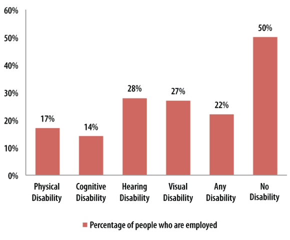

By Daria Domin and Jean E. Winsor
Prior to 2012, four data projects funded by the Administration on Intellectual and Developmental Disabilities (AIDD)—Access to Integrated Employment, Family and Individual Information Systems Project, Residential Information Systems Project, and the State of the States in Developmental Disabilities—only collected data from the 50 states and the District of Columbia. However, a 2012 Funding Opportunity Announcement (FOA) from AIDD requested that applicable AIDD data projects include the five U.S. Territories (American Samoa, the Commonwealth of the Northern Marianas Islands, Guam, Puerto Rico, and the Virgin Islands) in their data collection and analysis efforts. This Data Note represents an expansion of our data collection activities.
Since the mid-1980s, the Institute for Community Inclusion has collected disability data to describe trends in day and employment services for individuals with intellectual and developmental disabilities (IDD). This data is featured on www.StateData.info. The website includes data from state IDD agencies, as well as vocational rehabilitation (VR) outcomes and services from the Rehabilitation Services Administration. The site also contains data from the Social Security Administration, state mental health agencies, the U.S. Census, and the U.S. Department of Labor. The statedata.info goal is to be a one-stop shop for disability employment outcome data.
This data note is the second in a series on the territories produced by the Access to Integrated Employment project, focusing on the secondary data analysis of federal data sets. The data sources in this Data Note are ones that are typically analyzed for individual U.S. states.
The purpose of this Data Note is to describe the employment outcomes of adults with disabilities in the territory of Puerto Rico, drawing from a variety of data sources that mirror what statedata.info displays for U.S. states. The expectation is that this data collection effort will increase opportunities for self-determination, independence, productivity, and integration of people with IDD into their communities in the U.S. Territories.
The population of Puerto Rico in 2014 was estimated at 3,548,397 (U.S. Census). Seventy-six percent of residents of Puerto Rico identified their race as white and 12.4% identified as black. Regardless of race, 99% identified their ethnicity as Hispanic or Latino (U.S. Department of Commerce, 2014b). It is interesting to note that the Hispanic population of Puerto Rican origin in the 50 states and D.C. grew by more than one million between 2000 and 2010, and there are more people of Puerto Rican origin who live in the 50 states and D.C. than on the island of Puerto Rico (Lopez & Valesco, 2011). According to the Bureau of Labor Statistics, the unemployment rate in Puerto Rico in 2014 was 13.9%1.
Puerto Rico participates in the decennial United States Census, as well as the annual Puerto Rican Community Survey, a version of the Census Bureau’s American Community Survey, customized for Puerto Rico. Table 1 displays data for the working-age population in Puerto Rico with and without disabilities.
Similar to the mainland, individuals with cognitive disabilities in Puerto Rico have the highest unemployment rate, the lowest mean annual earnings (almost $8,300 less than individuals with no disabilities), and the lowest weekly hours worked of all population subgroups examined. This is also the group with the highest percentage of citizens living below the poverty line.
Figure 1: Percentage of People Employed by Disability Type, 20132
|
Physical Disability |
Cognitive Disability |
Hearing Disability |
Visual Disability |
Any
Disability |
No
Disability |
|
|---|---|---|---|---|---|---|
|
Number of people |
196,112 |
190,848 |
54,269 |
101,064 |
397,030 |
1,891,718 |
|
Number of people employed |
34,265 |
26,010 |
15,081 |
26,915 |
85,409 |
950,101 |
|
Mean annual earnings from work |
$20,748 |
$15,654 |
$21,495 |
$19,772 |
$19,586 |
$23,945 |
|
Mean weekly hours worked |
35 |
32 |
35 |
35 |
34 |
36 |
|
% of people living below the poverty line |
50% |
55% |
45% |
54% |
52% |
41% |
Rehabilitation Services Administration 911 database (RSA-911) is a public access database that captures individual characteristics, services provided, and employment outcomes at the point of closure from vocational rehabilitation (VR) services. Records are at the individual level and cover approximately 600,000 case closures per year nationally.
In Puerto Rico, as Table 2 indicates, 2013 saw the lowest number of closures for people with ID into an employment setting since 2005. Another notable finding is the 17% decline in the total number of closures between 2011 and 2013, and an even sharper decline for individuals with ID. The rehabilitation rate is the percentage of people who gained employment out of the total number of people who received services. In 2013, the rehabilitation rate of people with ID was 58.8%, the lowest since 2005; however, it was still higher than the U.S. national average of 50.8% (Butterworth et al., 2015).
|
2005 |
2007 |
2009 |
2011 |
2013 |
|
|---|---|---|---|---|---|
|
Total number of closures |
7,023 |
7,382 |
8,185 |
8,063 |
6,652 |
|
Total number of closures with ID |
585 |
531 |
573 |
686 |
380 |
|
Closures into an employment setting |
2,767 |
2,590 |
2,435 |
2,711 |
3,026 |
|
Closures with ID into an employment setting |
257 |
211 |
211 |
229 |
183 |
|
Closures with an IPE but no employment outcome |
861 |
720 |
897 |
1,030 |
1,310 |
|
Closures with ID and an Individual Plan for Employment but no employment outcome |
101 |
102 |
114 |
147 |
128 |
|
Closures with supported employment as a goal |
205 |
198 |
213 |
259 |
231 |
|
Closures with ID and supported employment as a goal |
130 |
110 |
121 |
147 |
117 |
|
Rehabilitation rate for all closures with an IPE |
76.3% |
78.2% |
73.1% |
72.5% |
69.8% |
|
Rehabilitation rate for all closures with ID |
71.8% |
67.4% |
64.9% |
60.9% |
58.8% |
|
Percentage of all closures into employment |
39.4% |
35.1% |
29.7% |
33.6% |
45.5% |
|
Percentage of closures with ID into employment |
43.9% |
39.7% |
36.8% |
33.4% |
48.2% |
The Wagner-Peyser Act of 1933 established a nationwide system of public employment offices, known as the Employment Service. In 1998, the act was amended by the Workforce Investment Act, and the Employment Service became part of the One-Stop workforce system. The mission remains the same: to assist job seekers in finding jobs and employers in finding qualified workers3.
The number of registered job seekers (this includes individuals with and without disabilities) in Puerto Rico has fluctuated since 2005, while the number of registered job seekers with a disability has remained rather steady since 2007. The number of registered job seekers more than doubled from 2009 to 2011. In fact, the number of job seekers with disabilities increased only slightly during this time.
|
2005 |
2007 |
2009 |
2011 |
2013 |
|
|---|---|---|---|---|---|
|
Number of registered job seekers |
177,758 |
61,493 |
45,604 |
97,967 |
129,990 |
|
Number of registered job seekers with a disability |
5,209 |
1,793 |
1,387 |
1,412 |
1,749 |
|
Percentage of registered job seekers with a disability |
2.9% |
2.9% |
3.0% |
1.4% |
1.3% |
Old Age Survivor and Disability Insurance (OASDI) 4 is a comprehensive federal benefits program that provides benefits to retirees, people with disabilities, and their survivors. The most recent data available for Puerto Rico is from 20145. As Figure 2 shows, since 2006 there has been a steady increase in the number of OASDI beneficiaries. While there has been a steady increase in OASDI workers with disabilities since 2006, a slight decline occurred between 2012 and 2014.
In summary, trend data show that 2013–2014 saw a decline in employment outcomes for people with disabilities compared to previous years presented here. In 2013, individuals with ID had the lowest rehabilitation rate (RSA-911). That same year saw the lowest percentage of registered job seekers with a disability since 2005 (Wagner-Peyser), and 2014 saw a decline in OASDI workers with disabilities. With high unemployment and economic woes plaguing the island, workers with disabilities, especially those with IDD, are having a more difficult time accessing the job market. The expectation, however, is that disability employment outcome data on U.S. Territories presented in this Data Note series can inform policy makers, advocates, and employment providers to effect policy change in the arena of integrated employment of individuals with IDD.
Butterworth, J., Winsor, J., Smith, F. A., Migliore, A., Domin, D, Timmons, J. C., & Hall, A. C. (2015). StateData: The national report on employment services and outcomes. Boston, MA: University of Massachusetts Boston, Institute for Community Inclusion.
López, M. H., & Valesco, G. (2011). A demographic portrait of Puerto Ricans: Statistical profile. Pew Research Hispanic Trends Project. Retrieved from www.pewhispanic.org/2011/06/13/a-demographic-portrait-of-puerto-ricans/
U.S. Census Bureau, Population Division. Annual estimates of the resident population: April 1, 2010 to July 1, 2014. Retrieved from http://factfinder.census.gov/faces/tableservices/jsf/pages/productview.xhtml?src=CF
U.S. Department of Commerce. (2014b). United States Census Bureau: American fact finder. Retrieved from http://factfinder2.census.gov/faces/tableservices/jsf/pages/productview.xhtml?pid=ACS_12_1YR_S1810&prodType=table
1Bureau of Labor Statistics: www.bls.gov/news.release/archives/srgune_03042015.htm
2Puerto Rican Community Survey
3U.S Department of Labor Employment and Training Administration Wagner-Peyser Act Employment Services
4OASDI is administered by the Social Security Administration. SSA data that is available on statedata.info for U.S. states is missing for Puerto Rico because individuals living in Puerto Rico are not eligible for Supplemental Security Income.
5U.S. Social Security Administration; Office of Retirement and Disability Policy; Office of Research, Evaluation, and Statistics. OASDI Beneficiaries by State and County, 2006, 2008, 2010, 2014.
Domin, D., & Winsor, J. (2015). Federal Data Snapshot of Puerto Rico on Individuals with Disabilities. DataNote series, No. 52. Boston, MA: University of Massachusetts Boston, Institute for Community Inclusion.
This is a publication of StateData.info, funded in part by the Administration on Developmental Disabilities, U.S. Department of Health and Human Services (#90DN0216). State Data is a project of ThinkWork! at the Institute for Community Inclusion, University of Massachusetts Boston.